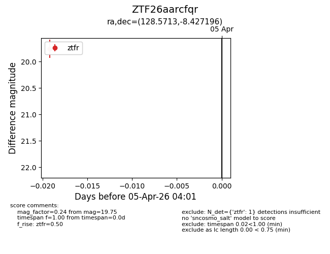
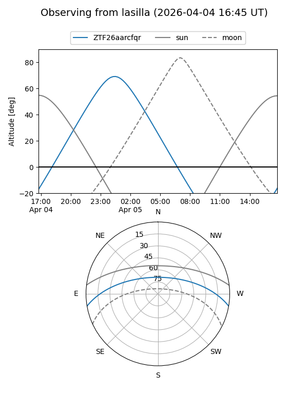
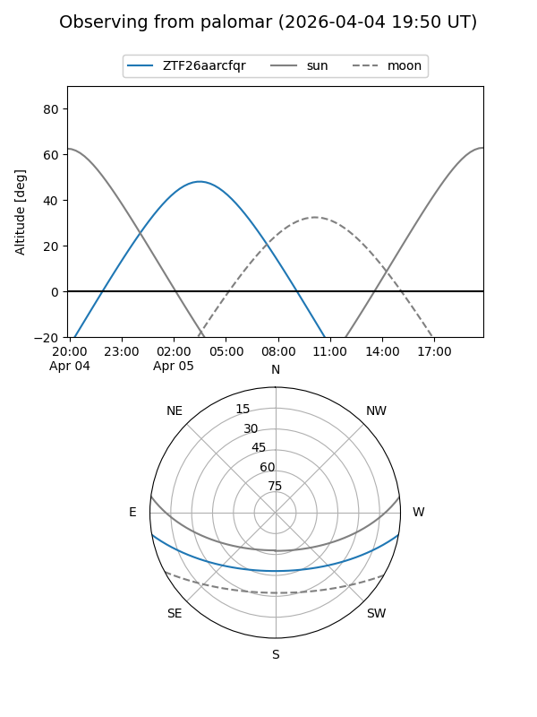

ZTF26aarcfqr
Target ZTF26aarcfqr at 2026-04-05 04:05
Aliases and brokers:
FINK: link
Lasair: link
ALeRCE: link
alt names
ZTF26aarcfqr (ztf,fink_ztf)
Coordinates:
equatorial (ra, dec) = 128.5713,-8.42720
equatorial (HMS+DMS) = 08:34:17.10,-08:25:37.90
galactic (l, b) = (233.0300,+18.36817)
Flags:
Photometry:
last ztfr=19.75
1 ztfr detections
Lightcurve

Visibility


Additional plots